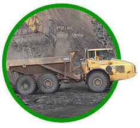
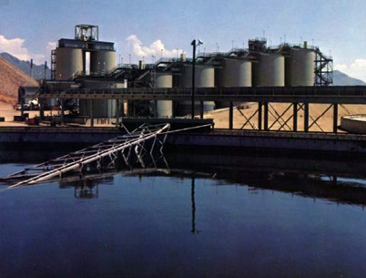
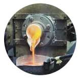

Mineral Processing
It is a major division in the science of Extractive Metallurgy,which has been defined as the science and art of extracting metals from their ores, refining them and preparing them for use
Problems

Hydrometallurgy
It is a method for obtaining metals from their ores.It is a technique involving the use of aqueous chemistry for the recovery of metals from ores,recycled or residual materials
Problems

Pyrometallurgy
It consists of the thermal treatment of minerals and metallurgical ores to bring about physical and chemical transformations in the materials to enable recovery of valuable metals.
Problems